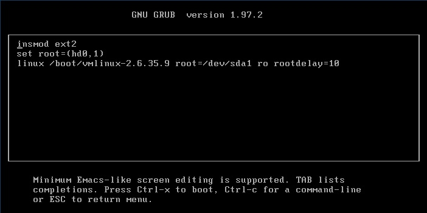
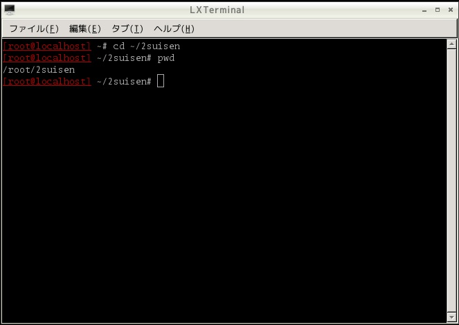
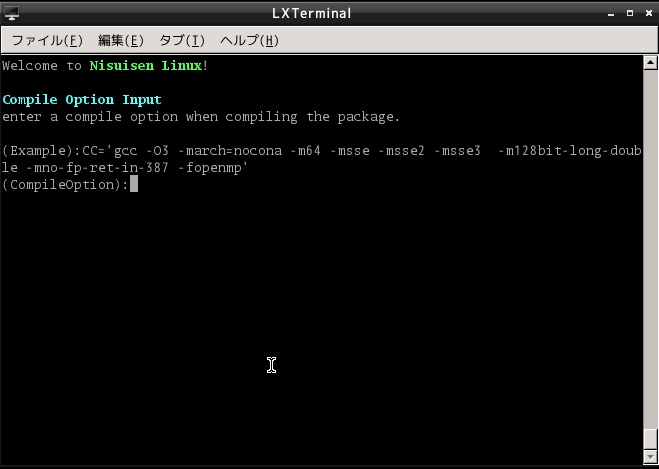

Nisuisen Linux

Nisuisen Linuxは 合同会社セグメンテーション・フォルト が開発したLinuxディストリビューションです。 LFS Book及びBLFSをベースに構成されており、デスクトップ環境はLXDEを採用しています。 インストール作業を行わずにコンピュータを使用できるようにDriveImageやLive DVD媒体にて配布をしております。 勿論、Live DVD等に付属するインストーラーにて目的のコンピュータにインストールすることも可能です。 Nisuisen Linux はシステムに必要な全てのプログラムをソースコードからビルドしますのでインストールに時間が掛かりますが、 ハードディスクにインストールされたNisuisen LinuxのパフォーマンスはLAMP環境をはじめとするサーバ用途或いは WindowsXPに代わるクライアント用途として圧倒的なパフォーマンスと鉄壁の堅牢性を発揮します。 驚くべきパフォーマンスと堅牢性の原因は「任意のビルドオプション定義」と「純粋なbinutils」の採用にあります。 詳細は以下のサイトを参照して下さい。 Nisuisen Linuxプロジェクト 疑問質問があれば以下のフォーラムへ投稿して下さい。 Source Forgeフォーラム
Nisuisen Linux ダウンロード
イメージファイルで立ち上げた場合、rootのパスワードは「root」になります。 ・USBイメージ(4GBサイズ) ※1 ※2 ・VMWAREイメージ(4GBサイズ)※3 ※1 起動するPCにはSATAハードディスク１台が接続されているのを前提です。それ以外はGRUB画面で調整して下さい。 ※2 解凍したアーカイブをddコマンドをつかってUSBメモリにコピーして下さい。 Windowsの場合はこちらを使って下さい。 ※3 解凍したアーカイブはそのまま仮想イメージファイルになっているのでVMWAREのメニューにて定義して下さい。 ・インストールプログラムのみ 他のLinux上の /root配下に展開して使用して下さい。
Nisuisen Linux イメージの使い方
USB（VMWare）イメージの場合は環境によって起動ドライブの指定を変更しないと立ち上がりません。 GRUB画面が出たら素早く「e」キーを押下し、編集画面を出して下さい。 変更部分は以下の通りです。 ① root=(hd0,1)のあたり ,1)の部分は論理区画の指定なので変更しないで下さい。 (hd0 の数字の部分をBIOSで定義した起動順によって変更します。 hd0 ←1台目のドライブがUSB（VMWare）ドライブである。 hd1 ←2台目のドライブがUSB（VMWare）ドライブである。 hd2 ←3台目のドライブがUSB（VMWare）ドライブである。 ② root=/dev/sda1のあたり sd,hdはHDDのデバイスを表し、それぞれに1台目から0,1と 番号を割り振ります。上手く起動しない場合は 起動するコンピュータの接続状況に応じて適宜変更して下さい。 変更が済んだらCtrl+XでLinuxを起動させて下さい。
ログインプロンプトが出たらrootでログインして下さい。 パスワードは「root」です。 NisuisenLinuxのランレベル３の構成はLFS BOOK6.7をインストールしたのとほぼ同じです。 ここから更に以下のコマンドでLXDEを起動します。 -bash-4.1# export LANG=ja_JP.utf8 -bash-4.1# xinit LXDE上ではランチャー等の基本アプリに加えてFirefoxをインストールしてあります。 ☆ネットワークに関して
以下のコマンドで出力があればネットワークカードが認識されています。 -bash-4.1# dmesg|grep eth 設定は何もしていないのでifconfig,routeコマンドを駆使して自力で経路を確立させて下さい。 （例） -bash-4.1# ifconfig eth0 inet 192.168.0.101 netmask 255.255.255.0 -bash-4.1# ifconfig eth0 up -bash-4.1# route add default gw 192.168.0.1
Nisuisen Linux ハードディスクへのインストール方法
①インストール準備 ・Nisuen Linux以外のLinuxを起動したコンピュータ上で違うハードディスクにインストールする場合 (1)ソースフォージ(http://sourceforge.jp/projects/nisuisen-lfs)からインストールプログラムをダウンロードして rootのホームディレクトリに展開して下さい。 (2)ディストリビューションで提供されているX Window関連の開発者パッケージをインストールしておいて下さい。 ・Nisuen Linuxを起動したコンピュータ上で違うハードディスクにインストールする場合 インストールプログラムや、必要なライブラリが同梱されているので上記(1)(2)の作業は不要です。 ・インストール作業時はインターネットへの接続が必須です。事前に準備しておいて下さい。 ②インストール手順 １．コマンドラインで操作します。rootを使用します。 以下のようにコマンドを入力し、カレントをインストール用のフォルダに指定します。 cd ~/2suisen
２．以下のようにコマンドを入力し、インストールプロクラムを起動します ./2suiSenLFS.sh

３．エンターキーを押せという旨のメッセージが表示されています。 [Enter]キーを押下して下さい。

この画面ようにインターネットへの接続確認を行います。
４．コンパイルオプションを入力します。 詳細がよくわからない場合は以下オプション内容を入力し、[Enter]キーを押下して下さい。 CFLAGS="-O3 -march=native"
５．ハードディスク一覧が表示されるのでインストール先のハードディスクの番号を入力して[Enter]キーを押下して下さい。
６．パーティションの定義方法が表示されます。よく読んで[Enter]キーを押下して下さい。 内容をおさらいすると ・論理領域1番を /boot と指定して64MB以上確保。システムIDは83(Linux) ・論理領域2番を 1GB以上確保。システムIDは82(swap) ・論理領域3番を / と指定して6GB以上確保。システムIDは83(Linux)
７．fdisk操作画面になりますので先ほど表示されたパーティションの定義方法にのっとって定義します。 fdiskの操作方法はコンソール上にて以下のコマンドを入力して下さい。 man fsck
定義されたパーティションが正しいかどうかチェックします。 この時ダメだった場合は[Enter]キーを押下して７．のfsck操作の作業に戻ります。 Okの場合はrootをパスワード入力せよとメッセージが表示されます。rootのパスワードを入力して[Enter]キーを押下して下さい。 何も入力しない場合、rootのパスワードは「root」になります。

あとはこのように、これから先は全自動でNisuisen Linuxをインストールします。 インストール所要時間ですが、最近のPCでも９時間程度はかかります。